Design System - FWD Cube
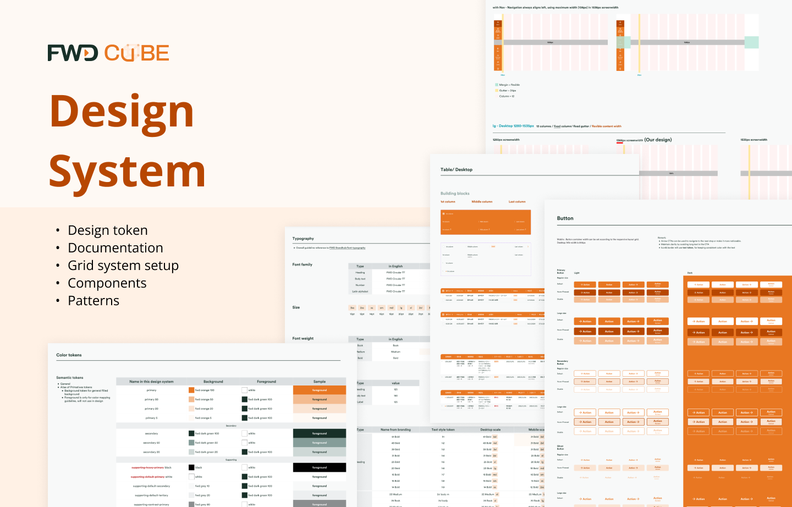
Project Brief
This project delivers a scalable, cross-platform design system for an all-in-one super App. It includes a structured design token system, clear documentation, responsive grid system setup, and reusable components and patterns to ensure consistency across web and app platforms. The system is designed to support multi-regional rollout, enabling flexibility for different markets and business needs while maintaining efficiency, quality, and long-term scalability.
Target Users
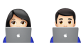
Designers of all ages that is using Figma and CUBE Design system for their daily tasks
My Role
- Design system manager
- Researcher
Main Activities
- Arrange design assets & Maintain design library
- Component design & Development
- User testing/ User interview
Project Achievements
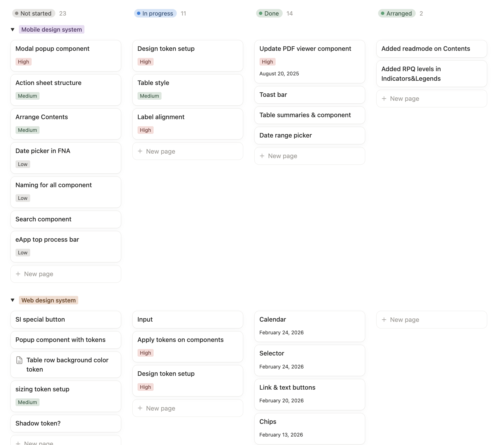
Project Process
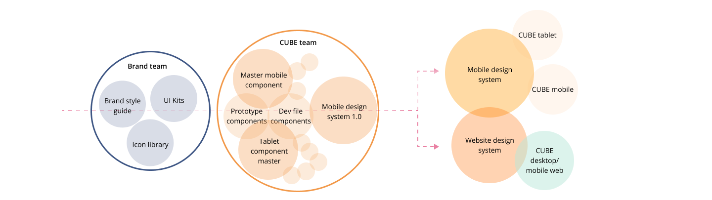
My Observations
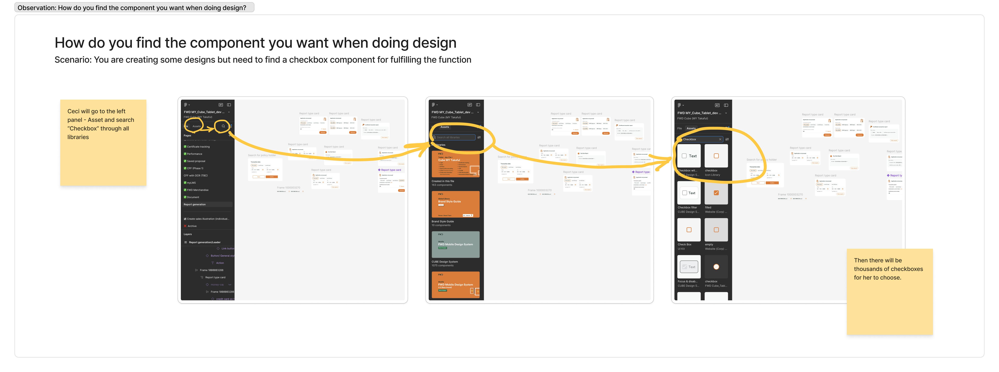
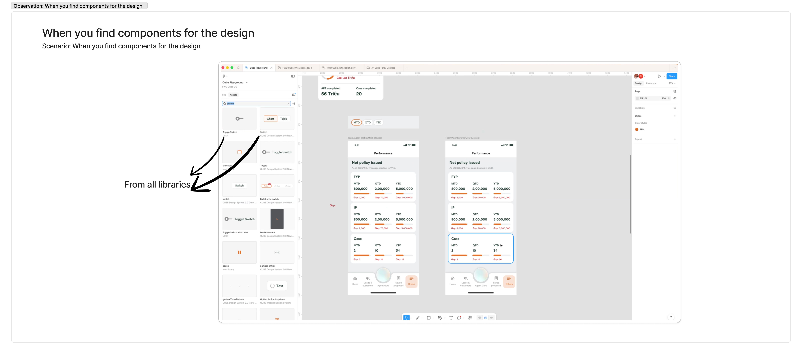
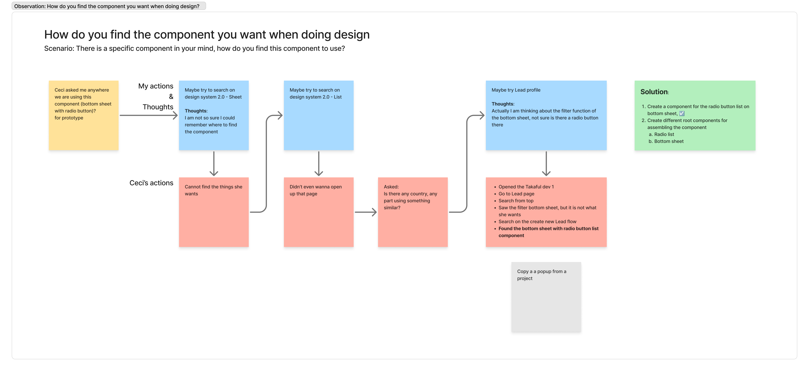
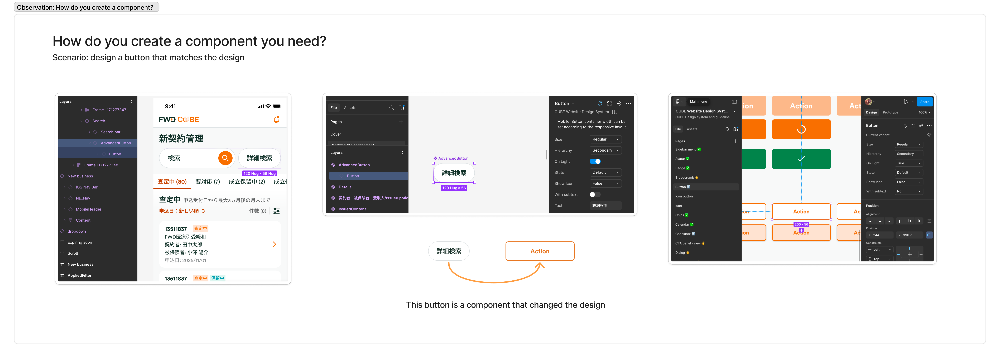
Our Painpoints
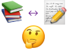
1. Unclear index between design system and design guideline
When designers are looking for a specific component like modal, they don’t know where to search
2. Too many libraries added to the working file
When designers search for one specific components via the asset panel on the left
- Too many results serving the same function from different libraries, or;
- Same components with different versions from different libraries
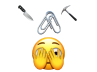
3. Components are not well-set for most scenarios or, there are too many variants for a component that are not easy to use
When designers are using one component, they tend to detach it
- Create one for their own will be faster than learning how to use the variants
- Create too many scenarios for one component set
Goals
For general usage
- In the working file, only link the necessary libraries like Design system, Icon library and Illustration library. Keep it simple
- Simply search the components we need on the asset panel, drag and drop to do the design
For components settings
- Well-set the variants, easy to use for switching variants
- Well-linked the tokens on the components in the design system, update the component from design system can update the same components for all working files
- Less chances for designers to detach the components
- Governance the newly added components for different regions
For further maintenance
- Only keep the atom components in the design system. Patterns and other assembled components varies from different regions, keep them in the working file.
- Create a storybook to store the component libraries → I can replace the design guidelines
One file to manage or keep record for comparison on the same pattern from different regions → Module component library
How far did we go?
Showcase - Color token setup
I interviewed 5 designers and 2 developsers about how they think and use color tokens in their design or development process.
| Designers | I asked them to try to link the color tokens as a simple user testing for different components like fonts, icons and so on. |
| Developers | I asked them to share their experiences and best practices for managing color tokens in their development workflow, and their opinions and understanding of the color token system in the design system. |
- Without briefing the users about the color token names, let them try to link the color tokens based on their understanding as the numbers shown on the image
- Observe how users interact with the color tokens and identify any confusion or difficulties they encounter
- After the testing, ask users about their understanding of the color token system and their feedback on the usability of the color tokens
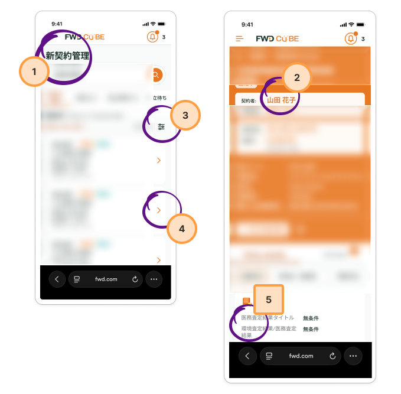

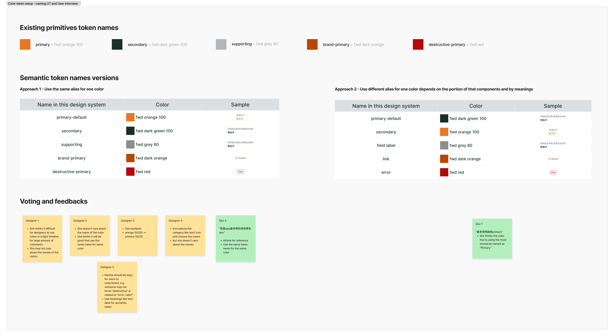
Conclusion & Actions- Simplify the token names to make it easier to understand
- Make the names more meaningful for the colors
- Reduce the text colors and name them by meanings
Before
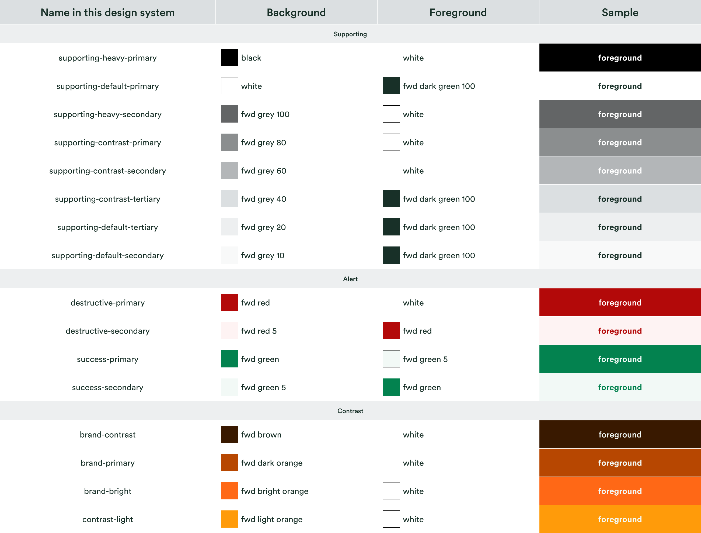
After
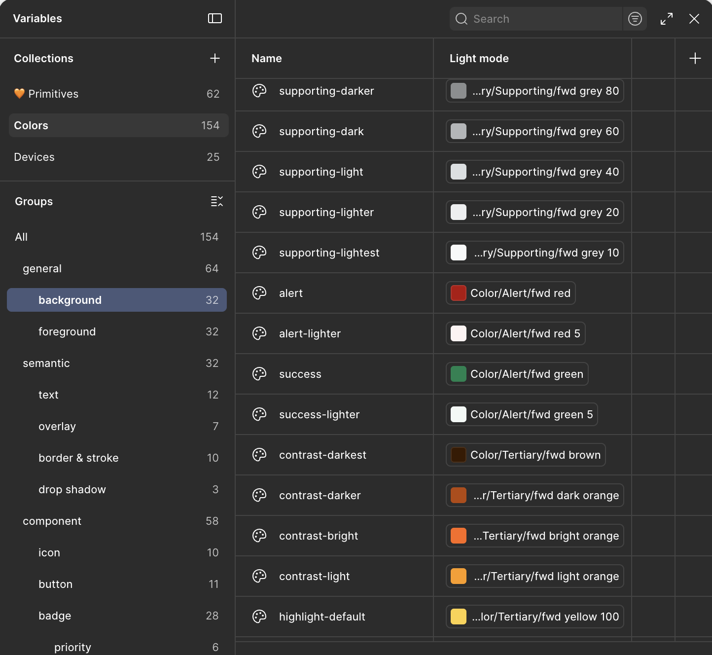